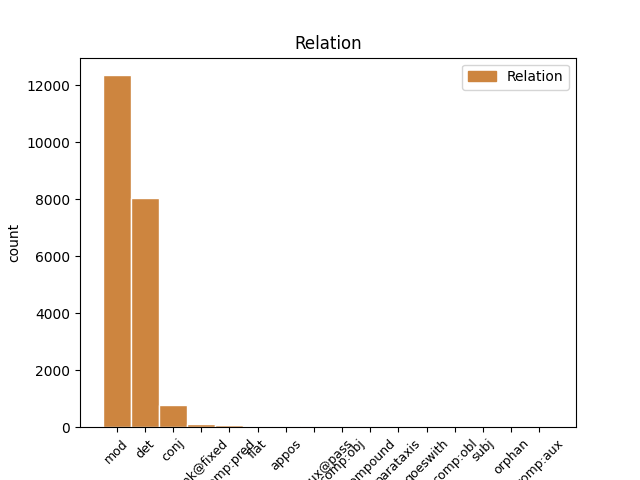
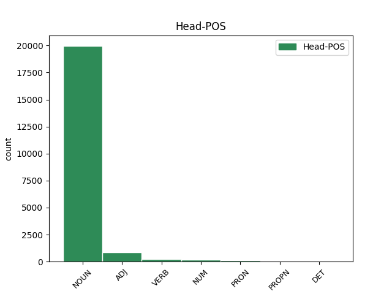
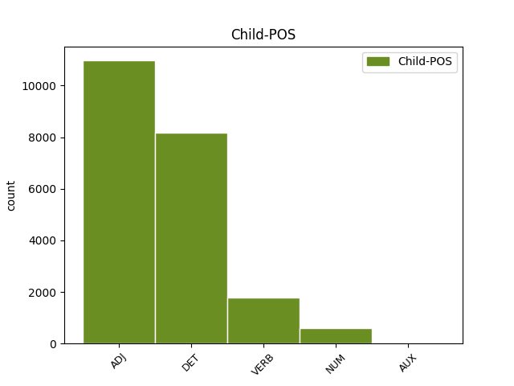

Distribution of features within this leaf



Agreement Rules sorted by frequency.
When the head token is NOUN and the dependent token is ADJ.
1 Dacă _ _ _ _ 0 _ _ _
2 V _ _ _ _ 0 _ _ _
3 este _ _ _ _ 0 _ _ _
4 aproape _ _ _ _ 0 _ _ _
5 de _ _ _ _ 0 _ _ _
6 zero _ _ _ _ 0 _ _ _
7 ( _ _ _ _ 0 _ _ _
8 V _ _ _ _ 0 _ _ _
9 < _ _ _ _ 0 _ _ _
10 35% _ _ _ _ 0 _ _ _
11 ) _ _ _ _ 0 _ _ _
12 , _ _ _ _ 0 _ _ _
13 atunci _ _ _ _ 0 _ _ _
14 populația populație NOUN Ncfsry Case=Acc,Nom|Definite=Def|Gender=Fem|Number=Sing 0 _ _ _
15 studiată studiat ADJ Afpfsrn Case=Acc,Nom|Definite=Ind|Degree=Pos|Gender=Fem|Number=Sing 14 mod _ _
16 statistic _ _ _ _ 0 _ _ _
17 este _ _ _ _ 0 _ _ _
18 omogenă _ _ _ _ 0 _ _ _
19 și _ _ _ _ 0 _ _ _
20 media _ _ _ _ 0 _ _ _
21 m _ _ _ _ 0 _ _ _
22 este _ _ _ _ 0 _ _ _
23 reprezentativă _ _ _ _ 0 _ _ _
24 pentru _ _ _ _ 0 _ _ _
25 această _ _ _ _ 0 _ _ _
26 populație _ _ _ _ 0 _ _ _
27 . _ _ _ _ 0 _ _ _
When the head token is NOUN and the dependent token is DET.
1 Dacă _ _ _ _ 0 _ _ _
2 V _ _ _ _ 0 _ _ _
3 este _ _ _ _ 0 _ _ _
4 aproape _ _ _ _ 0 _ _ _
5 de _ _ _ _ 0 _ _ _
6 zero _ _ _ _ 0 _ _ _
7 ( _ _ _ _ 0 _ _ _
8 V _ _ _ _ 0 _ _ _
9 < _ _ _ _ 0 _ _ _
10 35% _ _ _ _ 0 _ _ _
11 ) _ _ _ _ 0 _ _ _
12 , _ _ _ _ 0 _ _ _
13 atunci _ _ _ _ 0 _ _ _
14 populația _ _ _ _ 0 _ _ _
15 studiată _ _ _ _ 0 _ _ _
16 statistic _ _ _ _ 0 _ _ _
17 este _ _ _ _ 0 _ _ _
18 omogenă _ _ _ _ 0 _ _ _
19 și _ _ _ _ 0 _ _ _
20 media _ _ _ _ 0 _ _ _
21 m _ _ _ _ 0 _ _ _
22 este _ _ _ _ 0 _ _ _
23 reprezentativă _ _ _ _ 0 _ _ _
24 pentru _ _ _ _ 0 _ _ _
25 această acest DET Dd3fsr---e Case=Acc,Nom|Gender=Fem|Number=Sing|Person=3|Position=Prenom|PronType=Dem 26 det _ _
26 populație populație NOUN Ncfsrn Case=Acc,Nom|Definite=Ind|Gender=Fem|Number=Sing 0 _ _ _
27 . _ _ _ _ 0 _ _ _
When the head token is NOUN and the dependent token is VERB.
1 Mediana _ _ _ _ 0 _ _ _
2 me _ _ _ _ 0 _ _ _
3 a _ _ _ _ 0 _ _ _
4 unui _ _ _ _ 0 _ _ _
5 set _ _ _ _ 0 _ _ _
6 de _ _ _ _ 0 _ _ _
7 date dată NOUN Ncfp-n Definite=Ind|Gender=Fem|Number=Plur 0 _ _ _
8 statistice _ _ _ _ 0 _ _ _
9 distincte _ _ _ _ 0 _ _ _
10 ordonate ordona VERB Vmp--pf Gender=Fem|Number=Plur|VerbForm=Part 7 mod _ _
11 după _ _ _ _ 0 _ _ _
12 mărime _ _ _ _ 0 _ _ _
13 x1 _ _ _ _ 0 _ _ _
14 < _ _ _ _ 0 _ _ _
15 x2 _ _ _ _ 0 _ _ _
16 < _ _ _ _ 0 _ _ _
17 ... _ _ _ _ 0 _ _ _
18 < _ _ _ _ 0 _ _ _
19 xn _ _ _ _ 0 _ _ _
20 este _ _ _ _ 0 _ _ _
21 numărul _ _ _ _ 0 _ _ _
22 care _ _ _ _ 0 _ _ _
23 împarte _ _ _ _ 0 _ _ _
24 setul _ _ _ _ 0 _ _ _
25 de _ _ _ _ 0 _ _ _
26 date _ _ _ _ 0 _ _ _
27 în _ _ _ _ 0 _ _ _
28 două _ _ _ _ 0 _ _ _
29 grupe _ _ _ _ 0 _ _ _
30 egale _ _ _ _ 0 _ _ _
31 ca _ _ _ _ 0 _ _ _
32 număr _ _ _ _ 0 _ _ _
33 . _ _ _ _ 0 _ _ _
When the head token is ADJ and the dependent token is ADJ.
1 Plaja _ _ _ _ 0 _ _ _
2 P _ _ _ _ 0 _ _ _
3 este _ _ _ _ 0 _ _ _
4 diferența _ _ _ _ 0 _ _ _
5 dintre _ _ _ _ 0 _ _ _
6 cea _ _ _ _ 0 _ _ _
7 mai _ _ _ _ 0 _ _ _
8 mare mare ADJ Afpfsrn Case=Acc,Nom|Definite=Ind|Degree=Pos|Gender=Fem|Number=Sing 0 _ _ _
9 ( _ _ _ _ 0 _ _ _
10 H _ _ _ _ 0 _ _ _
11 ) _ _ _ _ 0 _ _ _
12 și _ _ _ _ 0 _ _ _
13 cea _ _ _ _ 0 _ _ _
14 mai _ _ _ _ 0 _ _ _
15 mică mic ADJ Afpfsrn Case=Acc,Nom|Definite=Ind|Degree=Pos|Gender=Fem|Number=Sing 8 conj _ _
16 ( _ _ _ _ 0 _ _ _
17 L _ _ _ _ 0 _ _ _
18 ) _ _ _ _ 0 _ _ _
19 valoare _ _ _ _ 0 _ _ _
20 a _ _ _ _ 0 _ _ _
21 valorilor _ _ _ _ 0 _ _ _
22 xi _ _ _ _ 0 _ _ _
23 dintr- _ _ _ _ 0 _ _ _
24 un _ _ _ _ 0 _ _ _
25 set _ _ _ _ 0 _ _ _
26 de _ _ _ _ 0 _ _ _
27 date _ _ _ _ 0 _ _ _
28 . _ _ _ _ 0 _ _ _
When the head token is NOUN and the dependent token is NUM.
1 Mediana _ _ _ _ 0 _ _ _
2 me _ _ _ _ 0 _ _ _
3 a _ _ _ _ 0 _ _ _
4 unui _ _ _ _ 0 _ _ _
5 set _ _ _ _ 0 _ _ _
6 de _ _ _ _ 0 _ _ _
7 date _ _ _ _ 0 _ _ _
8 statistice _ _ _ _ 0 _ _ _
9 distincte _ _ _ _ 0 _ _ _
10 ordonate _ _ _ _ 0 _ _ _
11 după _ _ _ _ 0 _ _ _
12 mărime _ _ _ _ 0 _ _ _
13 x1 _ _ _ _ 0 _ _ _
14 < _ _ _ _ 0 _ _ _
15 x2 _ _ _ _ 0 _ _ _
16 < _ _ _ _ 0 _ _ _
17 ... _ _ _ _ 0 _ _ _
18 < _ _ _ _ 0 _ _ _
19 xn _ _ _ _ 0 _ _ _
20 este _ _ _ _ 0 _ _ _
21 numărul _ _ _ _ 0 _ _ _
22 care _ _ _ _ 0 _ _ _
23 împarte _ _ _ _ 0 _ _ _
24 setul _ _ _ _ 0 _ _ _
25 de _ _ _ _ 0 _ _ _
26 date _ _ _ _ 0 _ _ _
27 în _ _ _ _ 0 _ _ _
28 două doi NUM Mcfp-l Gender=Fem|Number=Plur|NumForm=Word|NumType=Card 29 mod _ _
29 grupe grupă NOUN Ncfp-n Definite=Ind|Gender=Fem|Number=Plur 0 _ _ _
30 egale _ _ _ _ 0 _ _ _
31 ca _ _ _ _ 0 _ _ _
32 număr _ _ _ _ 0 _ _ _
33 . _ _ _ _ 0 _ _ _
When the head token is ADJ and the dependent token is DET.
1 Plaja _ _ _ _ 0 _ _ _
2 P _ _ _ _ 0 _ _ _
3 este _ _ _ _ 0 _ _ _
4 diferența _ _ _ _ 0 _ _ _
5 dintre _ _ _ _ 0 _ _ _
6 cea _ _ _ _ 0 _ _ _
7 mai _ _ _ _ 0 _ _ _
8 mare _ _ _ _ 0 _ _ _
9 ( _ _ _ _ 0 _ _ _
10 H _ _ _ _ 0 _ _ _
11 ) _ _ _ _ 0 _ _ _
12 și _ _ _ _ 0 _ _ _
13 cea cel DET Tdfsr Case=Acc,Nom|Gender=Fem|Number=Sing|PronType=Dem 15 det _ _
14 mai _ _ _ _ 0 _ _ _
15 mică mic ADJ Afpfsrn Case=Acc,Nom|Definite=Ind|Degree=Pos|Gender=Fem|Number=Sing 0 _ _ _
16 ( _ _ _ _ 0 _ _ _
17 L _ _ _ _ 0 _ _ _
18 ) _ _ _ _ 0 _ _ _
19 valoare _ _ _ _ 0 _ _ _
20 a _ _ _ _ 0 _ _ _
21 valorilor _ _ _ _ 0 _ _ _
22 xi _ _ _ _ 0 _ _ _
23 dintr- _ _ _ _ 0 _ _ _
24 un _ _ _ _ 0 _ _ _
25 set _ _ _ _ 0 _ _ _
26 de _ _ _ _ 0 _ _ _
27 date _ _ _ _ 0 _ _ _
28 . _ _ _ _ 0 _ _ _
When the head token is NUM and the dependent token is DET.
1 Seria _ _ _ _ 0 _ _ _
2 de _ _ _ _ 0 _ _ _
3 distribuție _ _ _ _ 0 _ _ _
4 este _ _ _ _ 0 _ _ _
5 un _ _ _ _ 0 _ _ _
6 ansamblu _ _ _ _ 0 _ _ _
7 de _ _ _ _ 0 _ _ _
8 două _ _ _ _ 0 _ _ _
9 șiruri _ _ _ _ 0 _ _ _
10 finite _ _ _ _ 0 _ _ _
11 dintre _ _ _ _ 0 _ _ _
12 care _ _ _ _ 0 _ _ _
13 primul _ _ _ _ 0 _ _ _
14 este _ _ _ _ 0 _ _ _
15 șirul _ _ _ _ 0 _ _ _
16 elementelor _ _ _ _ 0 _ _ _
17 distincte _ _ _ _ 0 _ _ _
18 din _ _ _ _ 0 _ _ _
19 setul _ _ _ _ 0 _ _ _
20 de _ _ _ _ 0 _ _ _
21 date _ _ _ _ 0 _ _ _
22 statistice _ _ _ _ 0 _ _ _
23 sau _ _ _ _ 0 _ _ _
24 șirul _ _ _ _ 0 _ _ _
25 claselor _ _ _ _ 0 _ _ _
26 obținute _ _ _ _ 0 _ _ _
27 prin _ _ _ _ 0 _ _ _
28 gruparea _ _ _ _ 0 _ _ _
29 elementelor _ _ _ _ 0 _ _ _
30 din _ _ _ _ 0 _ _ _
31 setul _ _ _ _ 0 _ _ _
32 de _ _ _ _ 0 _ _ _
33 date _ _ _ _ 0 _ _ _
34 statistice _ _ _ _ 0 _ _ _
35 , _ _ _ _ 0 _ _ _
36 iar _ _ _ _ 0 _ _ _
37 cel _ _ _ _ 0 _ _ _
38 de- _ _ _ _ 0 _ _ _
39 al al DET Tsms Gender=Masc|Number=Sing|Poss=Yes|PronType=Prs 40 det _ _
40 doilea doi NUM Moms-l Gender=Masc|Number=Sing|NumForm=Word|NumType=Ord 0 _ _ _
41 este _ _ _ _ 0 _ _ _
42 șirul _ _ _ _ 0 _ _ _
43 de _ _ _ _ 0 _ _ _
44 frecvențe _ _ _ _ 0 _ _ _
45 corespunzătoare _ _ _ _ 0 _ _ _
46 . _ _ _ _ 0 _ _ _
When the head token is VERB and the dependent token is VERB.
1 Repetiția _ _ _ _ 0 _ _ _
2 se _ _ _ _ 0 _ _ _
3 poate _ _ _ _ 0 _ _ _
4 termina _ _ _ _ 0 _ _ _
5 printr- _ _ _ _ 0 _ _ _
6 o _ _ _ _ 0 _ _ _
7 varietate _ _ _ _ 0 _ _ _
8 de _ _ _ _ 0 _ _ _
9 condiții _ _ _ _ 0 _ _ _
10 , _ _ _ _ 0 _ _ _
11 iar _ _ _ _ 0 _ _ _
12 o _ _ _ _ 0 _ _ _
13 operație _ _ _ _ 0 _ _ _
14 repetată _ _ _ _ 0 _ _ _
15 poate _ _ _ _ 0 _ _ _
16 fi _ _ _ _ 0 _ _ _
17 întreruptă întrerupe VERB Vmp--sf Gender=Fem|Number=Sing|VerbForm=Part 0 _ _ _
18 sau _ _ _ _ 0 _ _ _
19 suspendată suspenda VERB Vmp--sf Gender=Fem|Number=Sing|VerbForm=Part 17 conj _ SpaceAfter=No
20 . _ _ _ _ 0 _ _ _
When the head token is VERB and the dependent token is ADJ.
1 Rondul _ _ _ _ 0 _ _ _
2 Vechi _ _ _ _ 0 _ _ _
3 CUG _ _ _ _ 0 _ _ _
4 I _ _ _ _ 0 _ _ _
5 este _ _ _ _ 0 _ _ _
6 abandonat abandona VERB Vmp--sm Gender=Masc|Number=Sing|VerbForm=Part 0 _ _ _
7 și _ _ _ _ 0 _ _ _
8 nefuncțional nefuncțional ADJ Afpms-n Definite=Ind|Degree=Pos|Gender=Masc|Number=Sing 6 conj _ SpaceAfter=No
9 , _ _ _ _ 0 _ _ _
10 fiind _ _ _ _ 0 _ _ _
11 îngropat _ _ _ _ 0 _ _ _
12 în _ _ _ _ 0 _ _ _
13 unele _ _ _ _ 0 _ _ _
14 părți _ _ _ _ 0 _ _ _
15 sub _ _ _ _ 0 _ _ _
16 pământ _ _ _ _ 0 _ _ _
17 . _ _ _ _ 0 _ _ _
When the head token is PRON and the dependent token is ADJ.
1 Pentru _ _ _ _ 0 _ _ _
2 a _ _ _ _ 0 _ _ _
3 ilustra _ _ _ _ 0 _ _ _
4 însă _ _ _ _ 0 _ _ _
5 diferența _ _ _ _ 0 _ _ _
6 dintre _ _ _ _ 0 _ _ _
7 probabilități _ _ _ _ 0 _ _ _
8 și _ _ _ _ 0 _ _ _
9 statistică _ _ _ _ 0 _ _ _
10 să _ _ _ _ 0 _ _ _
11 considerăm _ _ _ _ 0 _ _ _
12 două _ _ _ _ 0 _ _ _
13 urne _ _ _ _ 0 _ _ _
14 : _ _ _ _ 0 _ _ _
15 una _ _ _ _ 0 _ _ _
16 probabilistă _ _ _ _ 0 _ _ _
17 și _ _ _ _ 0 _ _ _
18 una unul PRON Pi3fsr Case=Acc,Nom|Gender=Fem|Number=Sing|Person=3|PronType=Ind 0 _ _ _
19 statistică statistic ADJ Afpfsrn Case=Acc,Nom|Definite=Ind|Degree=Pos|Gender=Fem|Number=Sing 18 mod _ SpaceAfter=No
20 . _ _ _ _ 0 _ _ _
When the head token is ADJ and the dependent token is VERB.
1 Unele _ _ _ _ 0 _ _ _
2 demolări _ _ _ _ 0 _ _ _
3 aveau _ _ _ _ 0 _ _ _
4 ca _ _ _ _ 0 _ _ _
5 scop _ _ _ _ 0 _ _ _
6 curățirea _ _ _ _ 0 _ _ _
7 orașului _ _ _ _ 0 _ _ _
8 de _ _ _ _ 0 _ _ _
9 clădirile _ _ _ _ 0 _ _ _
10 insalubre _ _ _ _ 0 _ _ _
11 și _ _ _ _ 0 _ _ _
12 mizere mizer ADJ Afpfp-n Definite=Ind|Degree=Pos|Gender=Fem|Number=Plur 0 _ _ _
13 sau _ _ _ _ 0 _ _ _
14 rămase rămâne VERB Vmp--pf Gender=Fem|Number=Plur|VerbForm=Part 12 conj _ _
15 în _ _ _ _ 0 _ _ _
16 ruină _ _ _ _ 0 _ _ _
17 de _ _ _ _ 0 _ _ _
18 pe _ _ _ _ 0 _ _ _
19 urma _ _ _ _ 0 _ _ _
20 războiului _ _ _ _ 0 _ _ _
21 , _ _ _ _ 0 _ _ _
22 altele _ _ _ _ 0 _ _ _
23 aveau _ _ _ _ 0 _ _ _
24 alte _ _ _ _ 0 _ _ _
25 scopuri _ _ _ _ 0 _ _ _
26 . _ _ _ _ 0 _ _ _
When the head token is PRON and the dependent token is DET.
1 Se _ _ _ _ 0 _ _ _
2 poate _ _ _ _ 0 _ _ _
3 deplasa _ _ _ _ 0 _ _ _
4 operandul _ _ _ _ 0 _ _ _
5 destinație _ _ _ _ 0 _ _ _
6 cu _ _ _ _ 0 _ _ _
7 până _ _ _ _ 0 _ _ _
8 la _ _ _ _ 0 _ _ _
9 31 _ _ _ _ 0 _ _ _
10 de _ _ _ _ 0 _ _ _
11 biți _ _ _ _ 0 _ _ _
12 , _ _ _ _ 0 _ _ _
13 corespunzător _ _ _ _ 0 _ _ _
14 operandului _ _ _ _ 0 _ _ _
15 contor _ _ _ _ 0 _ _ _
16 , _ _ _ _ 0 _ _ _
17 codificat _ _ _ _ 0 _ _ _
18 în _ _ _ _ 0 _ _ _
19 instrucțiune _ _ _ _ 0 _ _ _
20 ( _ _ _ _ 0 _ _ _
21 sunt _ _ _ _ 0 _ _ _
22 luați _ _ _ _ 0 _ _ _
23 în _ _ _ _ 0 _ _ _
24 considerare _ _ _ _ 0 _ _ _
25 numai _ _ _ _ 0 _ _ _
26 ultimii _ _ _ _ 0 _ _ _
27 5 _ _ _ _ 0 _ _ _
28 biți _ _ _ _ 0 _ _ _
29 ai al DET Tsmp Gender=Masc|Number=Plur|Poss=Yes|PronType=Prs 30 det _ _
30 acestuia acesta PRON Pd3mso Case=Dat,Gen|Gender=Masc|Number=Sing|Person=3|PronType=Dem 0 _ _ _
31 ) _ _ _ _ 0 _ _ _
32 . _ _ _ _ 0 _ _ _
When the head token is PROPN and the dependent token is DET.
1 Principalele _ _ _ _ 0 _ _ _
2 campusuri _ _ _ _ 0 _ _ _
3 studențești _ _ _ _ 0 _ _ _
4 se _ _ _ _ 0 _ _ _
5 află _ _ _ _ 0 _ _ _
6 în _ _ _ _ 0 _ _ _
7 Tudor _ _ _ _ 0 _ _ _
8 Vladimirescu _ _ _ _ 0 _ _ _
9 ( _ _ _ _ 0 _ _ _
10 22 _ _ _ _ 0 _ _ _
11 cămine _ _ _ _ 0 _ _ _
12 ) _ _ _ _ 0 _ _ _
13 - _ _ _ _ 0 _ _ _
14 unde _ _ _ _ 0 _ _ _
15 se _ _ _ _ 0 _ _ _
16 află _ _ _ _ 0 _ _ _
17 cel _ _ _ _ 0 _ _ _
18 mai _ _ _ _ 0 _ _ _
19 mare _ _ _ _ 0 _ _ _
20 cămin _ _ _ _ 0 _ _ _
21 din _ _ _ _ 0 _ _ _
22 partea _ _ _ _ 0 _ _ _
23 de _ _ _ _ 0 _ _ _
24 sud-est _ _ _ _ 0 _ _ _
25 a al DET Tsfs Gender=Fem|Number=Sing|Poss=Yes|PronType=Prs 26 det _ _
26 Europei Europa PROPN Npfsoy Case=Dat,Gen|Definite=Def|Gender=Fem|Number=Sing 0 _ _ _
27 , _ _ _ _ 0 _ _ _
28 Titu _ _ _ _ 0 _ _ _
29 Maiorescu _ _ _ _ 0 _ _ _
30 ( _ _ _ _ 0 _ _ _
31 4 _ _ _ _ 0 _ _ _
32 cămine _ _ _ _ 0 _ _ _
33 ) _ _ _ _ 0 _ _ _
34 , _ _ _ _ 0 _ _ _
35 Târgușor-Copou _ _ _ _ 0 _ _ _
36 ( _ _ _ _ 0 _ _ _
37 4 _ _ _ _ 0 _ _ _
38 cămine _ _ _ _ 0 _ _ _
39 ) _ _ _ _ 0 _ _ _
40 , _ _ _ _ 0 _ _ _
41 Codrescu _ _ _ _ 0 _ _ _
42 ( _ _ _ _ 0 _ _ _
43 5 _ _ _ _ 0 _ _ _
44 cămine _ _ _ _ 0 _ _ _
45 și _ _ _ _ 0 _ _ _
46 complexul _ _ _ _ 0 _ _ _
47 internațional _ _ _ _ 0 _ _ _
48 Gaudeamus _ _ _ _ 0 _ _ _
49 ) _ _ _ _ 0 _ _ _
50 și _ _ _ _ 0 _ _ _
51 Agronomie _ _ _ _ 0 _ _ _
52 ( _ _ _ _ 0 _ _ _
53 4 _ _ _ _ 0 _ _ _
54 cămine _ _ _ _ 0 _ _ _
55 ) _ _ _ _ 0 _ _ _
56 . _ _ _ _ 0 _ _ _
When the head token is DET and the dependent token is DET.
1 De _ _ _ _ 0 _ _ _
2 cele cel DET Tdfpr Case=Acc,Nom|Gender=Fem|Number=Plur|PronType=Dem 4 det _ _
3 mai _ _ _ _ 0 _ _ _
4 multe mult DET Di3fp Gender=Fem|Number=Plur|Person=3|PronType=Ind 0 _ _ _
5 ori _ _ _ _ 0 _ _ _
6 în _ _ _ _ 0 _ _ _
7 asemenea _ _ _ _ 0 _ _ _
8 cazuri _ _ _ _ 0 _ _ _
9 este _ _ _ _ 0 _ _ _
10 necesară _ _ _ _ 0 _ _ _
11 separarea _ _ _ _ 0 _ _ _
12 populației _ _ _ _ 0 _ _ _
13 statistice _ _ _ _ 0 _ _ _
14 în _ _ _ _ 0 _ _ _
15 mai _ _ _ _ 0 _ _ _
16 multe _ _ _ _ 0 _ _ _
17 grupe _ _ _ _ 0 _ _ _
18 omogene _ _ _ _ 0 _ _ _
19 , _ _ _ _ 0 _ _ _
20 care _ _ _ _ 0 _ _ _
21 se _ _ _ _ 0 _ _ _
22 studiază _ _ _ _ 0 _ _ _
23 separat _ _ _ _ 0 _ _ _
24 . _ _ _ _ 0 _ _ _
When the head token is NUM and the dependent token is NUM.
1 Este _ _ _ _ 0 _ _ _
2 a _ _ _ _ 0 _ _ _
3 noua nouă NUM Mofs-l Gender=Fem|Number=Sing|NumForm=Word|NumType=Ord 0 _ _ _
4 țară _ _ _ _ 0 _ _ _
5 după _ _ _ _ 0 _ _ _
6 suprafața _ _ _ _ 0 _ _ _
7 teritoriului _ _ _ _ 0 _ _ _
8 ( _ _ _ _ 0 _ _ _
9 238 _ _ _ _ 0 _ _ _
10 391 _ _ _ _ 0 _ _ _
11 km _ _ _ _ 0 _ _ _
12 , _ _ _ _ 0 _ _ _
13 ) _ _ _ _ 0 _ _ _
14 și _ _ _ _ 0 _ _ _
15 a _ _ _ _ 0 _ _ _
16 șaptea șapte NUM Mofs-l Gender=Fem|Number=Sing|NumForm=Word|NumType=Ord 3 conj _ _
17 dupa _ _ _ _ 0 _ _ _
18 numărul _ _ _ _ 0 _ _ _
19 populației _ _ _ _ 0 _ _ _
20 ( _ _ _ _ 0 _ _ _
21 peste _ _ _ _ 0 _ _ _
22 22 _ _ _ _ 0 _ _ _
23 milioane _ _ _ _ 0 _ _ _
24 locuitori _ _ _ _ 0 _ _ _
25 ) _ _ _ _ 0 _ _ _
26 dintre _ _ _ _ 0 _ _ _
27 statele _ _ _ _ 0 _ _ _
28 membre _ _ _ _ 0 _ _ _
29 ale _ _ _ _ 0 _ _ _
30 Uniunii _ _ _ _ 0 _ _ _
31 Europene _ _ _ _ 0 _ _ _
32 . _ _ _ _ 0 _ _ _
When the head token is PRON and the dependent token is VERB.
1 Un _ _ _ _ 0 _ _ _
2 program _ _ _ _ 0 _ _ _
3 este _ _ _ _ 0 _ _ _
4 constituit _ _ _ _ 0 _ _ _
5 dintr- _ _ _ _ 0 _ _ _
6 o _ _ _ _ 0 _ _ _
7 mulțime _ _ _ _ 0 _ _ _
8 de _ _ _ _ 0 _ _ _
9 funcții _ _ _ _ 0 _ _ _
10 , _ _ _ _ 0 _ _ _
11 declarate _ _ _ _ 0 _ _ _
12 pe _ _ _ _ 0 _ _ _
13 un _ _ _ _ 0 _ _ _
14 singur _ _ _ _ 0 _ _ _
15 nivel _ _ _ _ 0 _ _ _
16 ( _ _ _ _ 0 _ _ _
17 fără _ _ _ _ 0 _ _ _
18 a _ _ _ _ 0 _ _ _
19 se _ _ _ _ 0 _ _ _
20 imbrica _ _ _ _ 0 _ _ _
21 unele unul PRON Pi3fpr Case=Acc,Nom|Gender=Fem|Number=Plur|Person=3|PronType=Ind 0 _ _ _
22 în _ _ _ _ 0 _ _ _
23 altele _ _ _ _ 0 _ _ _
24 ) _ _ _ _ 0 _ _ _
25 , _ _ _ _ 0 _ _ _
26 grupate grupa VERB Vmp--pf Gender=Fem|Number=Plur|VerbForm=Part 21 conj _ _
27 în _ _ _ _ 0 _ _ _
28 module _ _ _ _ 0 _ _ _
29 program _ _ _ _ 0 _ _ _
30 . _ _ _ _ 0 _ _ _
When the head token is DET and the dependent token is NUM.
1 Băieții _ _ _ _ 0 _ _ _
2 nu _ _ _ _ 0 _ _ _
3 s- _ _ _ _ 0 _ _ _
4 au _ _ _ _ 0 _ _ _
5 lăsat _ _ _ _ 0 _ _ _
6 de _ _ _ _ 0 _ _ _
7 șotii _ _ _ _ 0 _ _ _
8 nici _ _ _ _ 0 _ _ _
9 de _ _ _ _ 0 _ _ _
10 astă _ _ _ _ 0 _ _ _
11 dată _ _ _ _ 0 _ _ _
12 , _ _ _ _ 0 _ _ _
13 și _ _ _ _ 0 _ _ _
14 s- _ _ _ _ 0 _ _ _
15 au _ _ _ _ 0 _ _ _
16 apucat _ _ _ _ 0 _ _ _
17 să _ _ _ _ 0 _ _ _
18 schimbe _ _ _ _ 0 _ _ _
19 pantofii _ _ _ _ 0 _ _ _
20 pasagerilor _ _ _ _ 0 _ _ _
21 , _ _ _ _ 0 _ _ _
22 puși _ _ _ _ 0 _ _ _
23 în _ _ _ _ 0 _ _ _
24 fața _ _ _ _ 0 _ _ _
25 ușii _ _ _ _ 0 _ _ _
26 , _ _ _ _ 0 _ _ _
27 spre _ _ _ _ 0 _ _ _
28 a _ _ _ _ 0 _ _ _
29 fi _ _ _ _ 0 _ _ _
30 lustruiți _ _ _ _ 0 _ _ _
31 a al DET Tsfs Gender=Fem|Number=Sing|Poss=Yes|PronType=Prs 0 _ _ _
32 doua doi NUM Mofs-l Gender=Fem|Number=Sing|NumForm=Word|NumType=Ord 31 comp:obj _ _
33 zi _ _ _ _ 0 _ _ _
34 de _ _ _ _ 0 _ _ _
35 dimineață _ _ _ _ 0 _ _ _
36 . _ _ _ _ 0 _ _ _
When the head token is DET and the dependent token is ADJ.
1 Principalele _ _ _ _ 0 _ _ _
2 industrii _ _ _ _ 0 _ _ _
3 ale _ _ _ _ 0 _ _ _
4 României _ _ _ _ 0 _ _ _
5 sunt _ _ _ _ 0 _ _ _
6 cea cel DET Tdfsr Case=Acc,Nom|Gender=Fem|Number=Sing|PronType=Dem 0 _ _ _
7 textilă textil ADJ Afpfsrn Case=Acc,Nom|Definite=Ind|Degree=Pos|Gender=Fem|Number=Sing 6 mod _ _
8 și _ _ _ _ 0 _ _ _
9 de _ _ _ _ 0 _ _ _
10 încălțăminte _ _ _ _ 0 _ _ _
11 , _ _ _ _ 0 _ _ _
12 industria _ _ _ _ 0 _ _ _
13 metalurgică _ _ _ _ 0 _ _ _
14 , _ _ _ _ 0 _ _ _
15 de _ _ _ _ 0 _ _ _
16 mașini _ _ _ _ 0 _ _ _
17 ușoare _ _ _ _ 0 _ _ _
18 și _ _ _ _ 0 _ _ _
19 de _ _ _ _ 0 _ _ _
20 ansamblare _ _ _ _ 0 _ _ _
21 de _ _ _ _ 0 _ _ _
22 mașini _ _ _ _ 0 _ _ _
23 , _ _ _ _ 0 _ _ _
24 minieră _ _ _ _ 0 _ _ _
25 , _ _ _ _ 0 _ _ _
26 de _ _ _ _ 0 _ _ _
27 prelucrare _ _ _ _ 0 _ _ _
28 a _ _ _ _ 0 _ _ _
29 lemnului _ _ _ _ 0 _ _ _
30 , _ _ _ _ 0 _ _ _
31 a _ _ _ _ 0 _ _ _
32 materialelor _ _ _ _ 0 _ _ _
33 de _ _ _ _ 0 _ _ _
34 construcții _ _ _ _ 0 _ _ _
35 , _ _ _ _ 0 _ _ _
36 chimică _ _ _ _ 0 _ _ _
37 , _ _ _ _ 0 _ _ _
38 alimentară _ _ _ _ 0 _ _ _
39 și _ _ _ _ 0 _ _ _
40 cea _ _ _ _ 0 _ _ _
41 de _ _ _ _ 0 _ _ _
42 rafinare _ _ _ _ 0 _ _ _
43 a _ _ _ _ 0 _ _ _
44 petrolului _ _ _ _ 0 _ _ _
45 . _ _ _ _ 0 _ _ _
When the head token is PROPN and the dependent token is ADJ.
1 România _ _ _ _ 0 _ _ _
2 este _ _ _ _ 0 _ _ _
3 o _ _ _ _ 0 _ _ _
4 țară _ _ _ _ 0 _ _ _
5 situată _ _ _ _ 0 _ _ _
6 în _ _ _ _ 0 _ _ _
7 sud-estul _ _ _ _ 0 _ _ _
8 Europei Europa PROPN Npfsoy Case=Dat,Gen|Definite=Def|Gender=Fem|Number=Sing 0 _ _ _
9 Centrale central ADJ Afpfp-n Definite=Ind|Degree=Pos|Gender=Fem|Number=Plur 8 mod _ SpaceAfter=No
10 , _ _ _ _ 0 _ _ _
11 pe _ _ _ _ 0 _ _ _
12 cursul _ _ _ _ 0 _ _ _
13 inferior _ _ _ _ 0 _ _ _
14 al _ _ _ _ 0 _ _ _
15 Dunării _ _ _ _ 0 _ _ _
16 , _ _ _ _ 0 _ _ _
17 la _ _ _ _ 0 _ _ _
18 nord _ _ _ _ 0 _ _ _
19 de _ _ _ _ 0 _ _ _
20 peninsula _ _ _ _ 0 _ _ _
21 Balcanică _ _ _ _ 0 _ _ _
22 și _ _ _ _ 0 _ _ _
23 la _ _ _ _ 0 _ _ _
24 țărmul _ _ _ _ 0 _ _ _
25 nord-vestic _ _ _ _ 0 _ _ _
26 al _ _ _ _ 0 _ _ _
27 Mării _ _ _ _ 0 _ _ _
28 Negre _ _ _ _ 0 _ _ _
29 . _ _ _ _ 0 _ _ _
When the head token is NUM and the dependent token is ADJ.
1 În _ _ _ _ 0 _ _ _
2 afară _ _ _ _ 0 _ _ _
3 de _ _ _ _ 0 _ _ _
4 faptul _ _ _ _ 0 _ _ _
5 că _ _ _ _ 0 _ _ _
6 costă _ _ _ _ 0 _ _ _
7 viețile _ _ _ _ 0 _ _ _
8 a _ _ _ _ 0 _ _ _
9 nenumărate nenumărat ADJ Afpfp-n Definite=Ind|Degree=Pos|Gender=Fem|Number=Plur 10 mod _ _
10 milioane milion NUM Mcfprln Case=Acc,Nom|Definite=Ind|Gender=Fem|Number=Plur|NumForm=Word|NumType=Card 0 _ _ _
11 de _ _ _ _ 0 _ _ _
12 animale _ _ _ _ 0 _ _ _
13 în _ _ _ _ 0 _ _ _
14 fiecare _ _ _ _ 0 _ _ _
15 an _ _ _ _ 0 _ _ _
16 , _ _ _ _ 0 _ _ _
17 producția _ _ _ _ 0 _ _ _
18 sa _ _ _ _ 0 _ _ _
19 cauzează _ _ _ _ 0 _ _ _
20 de _ _ _ _ 0 _ _ _
21 asemenea _ _ _ _ 0 _ _ _
22 înfometarea _ _ _ _ 0 _ _ _
23 a _ _ _ _ 0 _ _ _
24 milioane _ _ _ _ 0 _ _ _
25 în _ _ _ _ 0 _ _ _
26 toată _ _ _ _ 0 _ _ _
27 lumea _ _ _ _ 0 _ _ _
28 . _ _ _ _ 0 _ _ _
When the head token is PROPN and the dependent token is VERB.
1 În _ _ _ _ 0 _ _ _
2 ajunul _ _ _ _ 0 _ _ _
3 celui _ _ _ _ 0 _ _ _
4 de- _ _ _ _ 0 _ _ _
5 al _ _ _ _ 0 _ _ _
6 Doilea _ _ _ _ 0 _ _ _
7 Război _ _ _ _ 0 _ _ _
8 Mondial _ _ _ _ 0 _ _ _
9 ( _ _ _ _ 0 _ _ _
10 1940 _ _ _ _ 0 _ _ _
11 ) _ _ _ _ 0 _ _ _
12 , _ _ _ _ 0 _ _ _
13 România _ _ _ _ 0 _ _ _
14 Mare _ _ _ _ 0 _ _ _
15 ( _ _ _ _ 0 _ _ _
16 Reîntregită _ _ _ _ 0 _ _ _
17 ) _ _ _ _ 0 _ _ _
18 , _ _ _ _ 0 _ _ _
19 sub _ _ _ _ 0 _ _ _
20 presiunea _ _ _ _ 0 _ _ _
21 Germaniei Germania PROPN Npfsoy Case=Dat,Gen|Definite=Def|Gender=Fem|Number=Sing 0 _ _ _
22 condusă conduce VERB Vmp--sf Gender=Fem|Number=Sing|VerbForm=Part 21 mod _ _
23 de _ _ _ _ 0 _ _ _
24 Hitler _ _ _ _ 0 _ _ _
25 și _ _ _ _ 0 _ _ _
26 colaborarea _ _ _ _ 0 _ _ _
27 guvernului _ _ _ _ 0 _ _ _
28 pro-nazist _ _ _ _ 0 _ _ _
29 condus _ _ _ _ 0 _ _ _
30 de _ _ _ _ 0 _ _ _
31 Gigurtu _ _ _ _ 0 _ _ _
32 , _ _ _ _ 0 _ _ _
33 a _ _ _ _ 0 _ _ _
34 încetat _ _ _ _ 0 _ _ _
35 să _ _ _ _ 0 _ _ _
36 mai _ _ _ _ 0 _ _ _
37 existe _ _ _ _ 0 _ _ _
38 prin _ _ _ _ 0 _ _ _
39 cedarea _ _ _ _ 0 _ _ _
40 de _ _ _ _ 0 _ _ _
41 teritorii _ _ _ _ 0 _ _ _
42 Ungariei _ _ _ _ 0 _ _ _
43 ( _ _ _ _ 0 _ _ _
44 nordul _ _ _ _ 0 _ _ _
45 Transilvaniei _ _ _ _ 0 _ _ _
46 ) _ _ _ _ 0 _ _ _
47 , _ _ _ _ 0 _ _ _
48 Bulgariei _ _ _ _ 0 _ _ _
49 ( _ _ _ _ 0 _ _ _
50 Cadrilaterul _ _ _ _ 0 _ _ _
51 ) _ _ _ _ 0 _ _ _
52 și _ _ _ _ 0 _ _ _
53 Uniunii _ _ _ _ 0 _ _ _
54 Sovietice _ _ _ _ 0 _ _ _
55 ( _ _ _ _ 0 _ _ _
56 Basarabia _ _ _ _ 0 _ _ _
57 , _ _ _ _ 0 _ _ _
58 Herța _ _ _ _ 0 _ _ _
59 și _ _ _ _ 0 _ _ _
60 Bucovina _ _ _ _ 0 _ _ _
61 de _ _ _ _ 0 _ _ _
62 nord _ _ _ _ 0 _ _ _
63 ) _ _ _ _ 0 _ _ _
64 . _ _ _ _ 0 _ _ _
When the head token is ADJ and the dependent token is NUM.
1 Iradierea _ _ _ _ 0 _ _ _
2 durerii _ _ _ _ 0 _ _ _
3 în _ _ _ _ 0 _ _ _
4 lungul _ _ _ _ 0 _ _ _
5 ureterului _ _ _ _ 0 _ _ _
6 ar _ _ _ _ 0 _ _ _
7 corespunde _ _ _ _ 0 _ _ _
8 unei _ _ _ _ 0 _ _ _
9 iradieri _ _ _ _ 0 _ _ _
10 progresive _ _ _ _ 0 _ _ _
11 a _ _ _ _ 0 _ _ _
12 durerii _ _ _ _ 0 _ _ _
13 în _ _ _ _ 0 _ _ _
14 diferitele _ _ _ _ 0 _ _ _
15 segmente _ _ _ _ 0 _ _ _
16 cutanate _ _ _ _ 0 _ _ _
17 care _ _ _ _ 0 _ _ _
18 primesc _ _ _ _ 0 _ _ _
19 aceeași _ _ _ _ 0 _ _ _
20 inervație _ _ _ _ 0 _ _ _
21 ca _ _ _ _ 0 _ _ _
22 și _ _ _ _ 0 _ _ _
23 căile _ _ _ _ 0 _ _ _
24 urinare _ _ _ _ 0 _ _ _
25 inferioare _ _ _ _ 0 _ _ _
26 , _ _ _ _ 0 _ _ _
27 adică _ _ _ _ 0 _ _ _
28 la _ _ _ _ 0 _ _ _
29 nivelul _ _ _ _ 0 _ _ _
30 ultimelor _ _ _ _ 0 _ _ _
31 două _ _ _ _ 0 _ _ _
32 rădăcini _ _ _ _ 0 _ _ _
33 toracice _ _ _ _ 0 _ _ _
34 și _ _ _ _ 0 _ _ _
35 a _ _ _ _ 0 _ _ _
36 primelor prim NUM Mofpoly Case=Dat,Gen|Definite=Def|Gender=Fem|Number=Plur|NumForm=Word|NumType=Ord 38 mod _ _
37 două _ _ _ _ 0 _ _ _
38 lombare lombar ADJ Afpfp-n Definite=Ind|Degree=Pos|Gender=Fem|Number=Plur 0 _ _ _
39 . _ _ _ _ 0 _ _ _
When the head token is PRON and the dependent token is NUM.
1 Se _ _ _ _ 0 _ _ _
2 împrietenește _ _ _ _ 0 _ _ _
3 cu _ _ _ _ 0 _ _ _
4 Gordon _ _ _ _ 0 _ _ _
5 Craig _ _ _ _ 0 _ _ _
6 și _ _ _ _ 0 _ _ _
7 între _ _ _ _ 0 _ _ _
8 cei acela PRON Pd3mpr Case=Acc,Nom|Gender=Masc|Number=Plur|Person=3|PronType=Dem 0 _ _ _
9 doi doi NUM Mcmp-l Gender=Masc|Number=Plur|NumForm=Word|NumType=Card 8 mod _ _
10 se _ _ _ _ 0 _ _ _
11 poartă _ _ _ _ 0 _ _ _
12 o _ _ _ _ 0 _ _ _
13 corespondență _ _ _ _ 0 _ _ _
14 bogată _ _ _ _ 0 _ _ _
15 privind _ _ _ _ 0 _ _ _
16 concepția _ _ _ _ 0 _ _ _
17 lor _ _ _ _ 0 _ _ _
18 despre _ _ _ _ 0 _ _ _
19 arta _ _ _ _ 0 _ _ _
20 dramatică _ _ _ _ 0 _ _ _
21 . _ _ _ _ 0 _ _ _
When the head token is NUM and the dependent token is VERB.
1 Și _ _ _ _ 0 _ _ _
2 l- _ _ _ _ 0 _ _ _
3 a _ _ _ _ 0 _ _ _
4 băut _ _ _ _ 0 _ _ _
5 și _ _ _ _ 0 _ _ _
6 pe _ _ _ _ 0 _ _ _
7 al _ _ _ _ 0 _ _ _
8 treilea trei NUM Moms-l Gender=Masc|Number=Sing|NumForm=Word|NumType=Ord 0 _ _ _
9 , _ _ _ _ 0 _ _ _
10 oferit oferi VERB Vmp--sm Gender=Masc|Number=Sing|VerbForm=Part 8 mod _ _
11 de _ _ _ _ 0 _ _ _
12 Matei _ _ _ _ 0 _ _ _
13 Păunescu _ _ _ _ 0 _ _ _
14 , _ _ _ _ 0 _ _ _
15 în _ _ _ _ 0 _ _ _
16 hazul _ _ _ _ 0 _ _ _
17 tuturor _ _ _ _ 0 _ _ _
18 . _ _ _ _ 0 _ _ _
When the head token is VERB and the dependent token is DET.
1 Rândurile _ _ _ _ 0 _ _ _
2 f _ _ _ _ 0 _ _ _
3 și _ _ _ _ 0 _ _ _
4 h _ _ _ _ 0 _ _ _
5 : _ _ _ _ 0 _ _ _
6 În _ _ _ _ 0 _ _ _
7 cazul _ _ _ _ 0 _ _ _
8 în _ _ _ _ 0 _ _ _
9 care _ _ _ _ 0 _ _ _
10 depășirea _ _ _ _ 0 _ _ _
11 a _ _ _ _ 0 _ _ _
12 fost _ _ _ _ 0 _ _ _
13 observată _ _ _ _ 0 _ _ _
14 prin _ _ _ _ 0 _ _ _
15 modelare _ _ _ _ 0 _ _ _
16 , _ _ _ _ 0 _ _ _
17 se _ _ _ _ 0 _ _ _
18 înregistrează _ _ _ _ 0 _ _ _
19 în _ _ _ _ 0 _ _ _
20 acest _ _ _ _ 0 _ _ _
21 formular _ _ _ _ 0 _ _ _
22 și _ _ _ _ 0 _ _ _
23 în _ _ _ _ 0 _ _ _
24 următoarele _ _ _ _ 0 _ _ _
25 nivelul _ _ _ _ 0 _ _ _
26 cel cel DET Tdmsr Case=Acc,Nom|Gender=Masc|Number=Sing|PronType=Dem 28 det _ _
27 mai _ _ _ _ 0 _ _ _
28 ridicat ridica VERB Vmp--sm Gender=Masc|Number=Sing|VerbForm=Part 0 _ _ _
29 din _ _ _ _ 0 _ _ _
30 zona _ _ _ _ 0 _ _ _
31 de _ _ _ _ 0 _ _ _
32 depășire _ _ _ _ 0 _ _ _
33 . _ _ _ _ 0 _ _ _
When the head token is VERB and the dependent token is NUM.
1 L- _ _ _ _ 0 _ _ _
2 a _ _ _ _ 0 _ _ _
3 antrenat _ _ _ _ 0 _ _ _
4 pe _ _ _ _ 0 _ _ _
5 Eusebio _ _ _ _ 0 _ _ _
6 , _ _ _ _ 0 _ _ _
7 l- _ _ _ _ 0 _ _ _
8 a _ _ _ _ 0 _ _ _
9 învins _ _ _ _ 0 _ _ _
10 pe _ _ _ _ 0 _ _ _
11 Pele _ _ _ _ 0 _ _ _
12 și _ _ _ _ 0 _ _ _
13 și- _ _ _ _ 0 _ _ _
14 a _ _ _ _ 0 _ _ _
15 câștigat câștiga VERB Vmp--sm Gender=Masc|Number=Sing|VerbForm=Part 0 _ _ _
16 primul prim NUM Momsrly Case=Acc,Nom|Definite=Def|Gender=Masc|Number=Sing|NumForm=Word|NumType=Ord 15 mod _ _
17 apelativul _ _ _ _ 0 _ _ _
18 de _ _ _ _ 0 _ _ _
19 " _ _ _ _ 0 _ _ _
20 Mister _ _ _ _ 0 _ _ _
21 " _ _ _ _ 0 _ _ _
22 . _ _ _ _ 0 _ _ _
When the head token is NOUN and the dependent token is AUX.
1 Orice _ _ _ _ 0 _ _ _
2 mijloc mijloc NOUN Ncms-n Definite=Ind|Gender=Masc|Number=Sing 0 _ _ _
3 de _ _ _ _ 0 _ _ _
4 transport _ _ _ _ 0 _ _ _
5 sau _ _ _ _ 0 _ _ _
6 container _ _ _ _ 0 _ _ _
7 în _ _ _ _ 0 _ _ _
8 care _ _ _ _ 0 _ _ _
9 au _ _ _ _ 0 _ _ _
10 fost fi AUX Vap--sm Gender=Masc|Number=Sing|VerbForm=Part 2 mod _ _
11 îmbarcate _ _ _ _ 0 _ _ _
12 a _ _ _ _ 0 _ _ _
13 fost _ _ _ _ 0 _ _ _
14 curățat _ _ _ _ 0 _ _ _
15 și _ _ _ _ 0 _ _ _
16 dezinfectat _ _ _ _ 0 _ _ _
17 în _ _ _ _ 0 _ _ _
18 prealabil _ _ _ _ 0 _ _ _
19 cu _ _ _ _ 0 _ _ _
20 un _ _ _ _ 0 _ _ _
21 dezinfectant _ _ _ _ 0 _ _ _
22 autorizat _ _ _ _ 0 _ _ _
23 oficial _ _ _ _ 0 _ _ _
24 . _ _ _ _ 0 _ _ _
When the head token is DET and the dependent token is VERB.
1 cele cel DET Tdfpr Case=Acc,Nom|Gender=Fem|Number=Plur|PronType=Dem 0 _ _ _
2 așezate așeza VERB Vmp--pf Gender=Fem|Number=Plur|VerbForm=Part 1 mod _ _
3 în _ _ _ _ 0 _ _ _
4 apus _ _ _ _ 0 _ _ _
5 beneficiază _ _ _ _ 0 _ _ _
6 de _ _ _ _ 0 _ _ _
7 influențe _ _ _ _ 0 _ _ _
8 vestice _ _ _ _ 0 _ _ _
9 , _ _ _ _ 0 _ _ _
10 în _ _ _ _ 0 _ _ _
11 vreme _ _ _ _ 0 _ _ _
12 ce _ _ _ _ 0 _ _ _
13 statele _ _ _ _ 0 _ _ _
14 situate _ _ _ _ 0 _ _ _
15 în _ _ _ _ 0 _ _ _
16 est _ _ _ _ 0 _ _ _
17 preiau _ _ _ _ 0 _ _ _
18 elemente _ _ _ _ 0 _ _ _
19 din _ _ _ _ 0 _ _ _
20 muzicile _ _ _ _ 0 _ _ _
21 bizantină _ _ _ _ 0 _ _ _
22 , _ _ _ _ 0 _ _ _
23 slavă _ _ _ _ 0 _ _ _
24 și _ _ _ _ 0 _ _ _
25 , _ _ _ _ 0 _ _ _
26 mai _ _ _ _ 0 _ _ _
27 târziu _ _ _ _ 0 _ _ _
28 , _ _ _ _ 0 _ _ _
29 turcească _ _ _ _ 0 _ _ _
30 . _ _ _ _ 0 _ _ _
Disagree Examples:
1 Femeile _ _ _ _ 0 _ _ _
2 , _ _ _ _ 0 _ _ _
3 și _ _ _ _ 0 _ _ _
4 mai _ _ _ _ 0 _ _ _
5 ales _ _ _ _ 0 _ _ _
6 cele _ _ _ _ 0 _ _ _
7 tinere _ _ _ _ 0 _ _ _
8 , _ _ _ _ 0 _ _ _
9 erau _ _ _ _ 0 _ _ _
10 întotdeauna _ _ _ _ 0 _ _ _
11 cele _ _ _ _ 0 _ _ _
12 mai _ _ _ _ 0 _ _ _
13 fanatice _ _ _ _ 0 _ _ _
14 adepte _ _ _ _ 0 _ _ _
15 ale al DET Tsfp Gender=Fem|Number=Plur|Poss=Yes|PronType=Prs 16 det _ _
16 Partidului partid NOUN Ncmsoy Case=Dat,Gen|Definite=Def|Gender=Masc|Number=Sing 0 _ _ _
17 , _ _ _ _ 0 _ _ _
18 cele _ _ _ _ 0 _ _ _
19 care _ _ _ _ 0 _ _ _
20 înghițeau _ _ _ _ 0 _ _ _
21 slogane _ _ _ _ 0 _ _ _
22 , _ _ _ _ 0 _ _ _
23 care _ _ _ _ 0 _ _ _
24 făceau _ _ _ _ 0 _ _ _
25 spionaj _ _ _ _ 0 _ _ _
26 amator _ _ _ _ 0 _ _ _
27 și _ _ _ _ 0 _ _ _
28 te _ _ _ _ 0 _ _ _
29 turnau _ _ _ _ 0 _ _ _
30 dacă _ _ _ _ 0 _ _ _
31 te _ _ _ _ 0 _ _ _
32 miroseau _ _ _ _ 0 _ _ _
33 de _ _ _ _ 0 _ _ _
34 neortodoxie _ _ _ _ 0 _ _ _
35 . _ _ _ _ 0 _ _ _
1 Oamenii _ _ _ _ 0 _ _ _
2 de _ _ _ _ 0 _ _ _
3 pe _ _ _ _ 0 _ _ _
4 scaune _ _ _ _ 0 _ _ _
5 scoseseră _ _ _ _ 0 _ _ _
6 un _ _ _ _ 0 _ _ _
7 murmur _ _ _ _ 0 _ _ _
8 văzând _ _ _ _ 0 _ _ _
9 salopeta _ _ _ _ 0 _ _ _
10 neagră _ _ _ _ 0 _ _ _
11 a al DET Tsfs Gender=Fem|Number=Sing|Poss=Yes|PronType=Prs 13 det _ _
12 unui _ _ _ _ 0 _ _ _
13 membru membru NOUN Ncms-n Definite=Ind|Gender=Masc|Number=Sing 0 _ _ _
14 al _ _ _ _ 0 _ _ _
15 Partidului _ _ _ _ 0 _ _ _
16 Interior _ _ _ _ 0 _ _ _
17 . _ _ _ _ 0 _ _ _
1 Goldstein _ _ _ _ 0 _ _ _
2 era _ _ _ _ 0 _ _ _
3 un _ _ _ _ 0 _ _ _
4 renegat _ _ _ _ 0 _ _ _
5 și _ _ _ _ 0 _ _ _
6 un _ _ _ _ 0 _ _ _
7 decăzut _ _ _ _ 0 _ _ _
8 care _ _ _ _ 0 _ _ _
9 , _ _ _ _ 0 _ _ _
10 odată _ _ _ _ 0 _ _ _
11 , _ _ _ _ 0 _ _ _
12 cu _ _ _ _ 0 _ _ _
13 mult _ _ _ _ 0 _ _ _
14 timp _ _ _ _ 0 _ _ _
15 în _ _ _ _ 0 _ _ _
16 urmă _ _ _ _ 0 _ _ _
17 - _ _ _ _ 0 _ _ _
18 nimeni _ _ _ _ 0 _ _ _
19 nu _ _ _ _ 0 _ _ _
20 -și _ _ _ _ 0 _ _ _
21 mai _ _ _ _ 0 _ _ _
22 amintea _ _ _ _ 0 _ _ _
23 cu _ _ _ _ 0 _ _ _
24 siguranță _ _ _ _ 0 _ _ _
25 cât _ _ _ _ 0 _ _ _
26 anume _ _ _ _ 0 _ _ _
27 - _ _ _ _ 0 _ _ _
28 fusese _ _ _ _ 0 _ _ _
29 una _ _ _ _ 0 _ _ _
30 din _ _ _ _ 0 _ _ _
31 figurile _ _ _ _ 0 _ _ _
32 de _ _ _ _ 0 _ _ _
33 frunte _ _ _ _ 0 _ _ _
34 ale al DET Tsfp Gender=Fem|Number=Plur|Poss=Yes|PronType=Prs 35 det _ _
35 Partidului partid NOUN Ncmsoy Case=Dat,Gen|Definite=Def|Gender=Masc|Number=Sing 0 _ _ _
36 , _ _ _ _ 0 _ _ _
37 aproape _ _ _ _ 0 _ _ _
38 la _ _ _ _ 0 _ _ _
39 același _ _ _ _ 0 _ _ _
40 nivel _ _ _ _ 0 _ _ _
41 cu _ _ _ _ 0 _ _ _
42 Fratele _ _ _ _ 0 _ _ _
43 cel _ _ _ _ 0 _ _ _
44 Mare _ _ _ _ 0 _ _ _
45 însuși _ _ _ _ 0 _ _ _
46 , _ _ _ _ 0 _ _ _
47 dar _ _ _ _ 0 _ _ _
48 pe _ _ _ _ 0 _ _ _
49 urmă _ _ _ _ 0 _ _ _
50 se _ _ _ _ 0 _ _ _
51 angajase _ _ _ _ 0 _ _ _
52 în _ _ _ _ 0 _ _ _
53 activități _ _ _ _ 0 _ _ _
54 contrarevoluționare _ _ _ _ 0 _ _ _
55 , _ _ _ _ 0 _ _ _
56 fusese _ _ _ _ 0 _ _ _
57 condamnat _ _ _ _ 0 _ _ _
58 la _ _ _ _ 0 _ _ _
59 moarte _ _ _ _ 0 _ _ _
60 dar _ _ _ _ 0 _ _ _
61 , _ _ _ _ 0 _ _ _
62 nu _ _ _ _ 0 _ _ _
63 se _ _ _ _ 0 _ _ _
64 știe _ _ _ _ 0 _ _ _
65 cum _ _ _ _ 0 _ _ _
66 , _ _ _ _ 0 _ _ _
67 scăpase _ _ _ _ 0 _ _ _
68 și _ _ _ _ 0 _ _ _
69 dispăruse _ _ _ _ 0 _ _ _
70 ca _ _ _ _ 0 _ _ _
71 prin _ _ _ _ 0 _ _ _
72 minune _ _ _ _ 0 _ _ _
73 . _ _ _ _ 0 _ _ _
1 Îl _ _ _ _ 0 _ _ _
2 insultase _ _ _ _ 0 _ _ _
3 pe _ _ _ _ 0 _ _ _
4 Fratele _ _ _ _ 0 _ _ _
5 cel _ _ _ _ 0 _ _ _
6 Mare _ _ _ _ 0 _ _ _
7 , _ _ _ _ 0 _ _ _
8 denunțase _ _ _ _ 0 _ _ _
9 dictatura _ _ _ _ 0 _ _ _
10 Partidului _ _ _ _ 0 _ _ _
11 , _ _ _ _ 0 _ _ _
12 ceruse _ _ _ _ 0 _ _ _
13 încheierea _ _ _ _ 0 _ _ _
14 imediată _ _ _ _ 0 _ _ _
15 a _ _ _ _ 0 _ _ _
16 păcii _ _ _ _ 0 _ _ _
17 cu _ _ _ _ 0 _ _ _
18 Eurasia _ _ _ _ 0 _ _ _
19 , _ _ _ _ 0 _ _ _
20 solicitase _ _ _ _ 0 _ _ _
21 libertatea _ _ _ _ 0 _ _ _
22 cuvântului _ _ _ _ 0 _ _ _
23 , _ _ _ _ 0 _ _ _
24 libertatea _ _ _ _ 0 _ _ _
25 presei _ _ _ _ 0 _ _ _
26 , _ _ _ _ 0 _ _ _
27 libertatea _ _ _ _ 0 _ _ _
28 de _ _ _ _ 0 _ _ _
29 întrunire _ _ _ _ 0 _ _ _
30 , _ _ _ _ 0 _ _ _
31 libertatea _ _ _ _ 0 _ _ _
32 de _ _ _ _ 0 _ _ _
33 gândire _ _ _ _ 0 _ _ _
34 , _ _ _ _ 0 _ _ _
35 zbierând _ _ _ _ 0 _ _ _
36 ca _ _ _ _ 0 _ _ _
37 un _ _ _ _ 0 _ _ _
38 isteric _ _ _ _ 0 _ _ _
39 despre _ _ _ _ 0 _ _ _
40 trădarea _ _ _ _ 0 _ _ _
41 Revoluției _ _ _ _ 0 _ _ _
42 - _ _ _ _ 0 _ _ _
43 totul _ _ _ _ 0 _ _ _
44 într- _ _ _ _ 0 _ _ _
45 o _ _ _ _ 0 _ _ _
46 vorbire _ _ _ _ 0 _ _ _
47 polisilabică _ _ _ _ 0 _ _ _
48 rapidă _ _ _ _ 0 _ _ _
49 , _ _ _ _ 0 _ _ _
50 ca _ _ _ _ 0 _ _ _
51 un _ _ _ _ 0 _ _ _
52 fel _ _ _ _ 0 _ _ _
53 de _ _ _ _ 0 _ _ _
54 parodiere _ _ _ _ 0 _ _ _
55 a al DET Tsfs Gender=Fem|Number=Sing|Poss=Yes|PronType=Prs 56 det _ _
56 stilului stil NOUN Ncmsoy Case=Dat,Gen|Definite=Def|Gender=Masc|Number=Sing 0 _ _ _
57 obișnuit _ _ _ _ 0 _ _ _
58 al _ _ _ _ 0 _ _ _
59 oratorilor _ _ _ _ 0 _ _ _
60 Partidului _ _ _ _ 0 _ _ _
61 , _ _ _ _ 0 _ _ _
62 care _ _ _ _ 0 _ _ _
63 conținea _ _ _ _ 0 _ _ _
64 chiar _ _ _ _ 0 _ _ _
65 și _ _ _ _ 0 _ _ _
66 cuvinte _ _ _ _ 0 _ _ _
67 din _ _ _ _ 0 _ _ _
68 Nouvorbă _ _ _ _ 0 _ _ _
69 ; _ _ _ _ 0 _ _ _
70 de _ _ _ _ 0 _ _ _
71 fapt _ _ _ _ 0 _ _ _
72 mult _ _ _ _ 0 _ _ _
73 mai _ _ _ _ 0 _ _ _
74 multe _ _ _ _ 0 _ _ _
75 asemenea _ _ _ _ 0 _ _ _
76 cuvinte _ _ _ _ 0 _ _ _
77 decât _ _ _ _ 0 _ _ _
78 folosea _ _ _ _ 0 _ _ _
79 oricare _ _ _ _ 0 _ _ _
80 membru _ _ _ _ 0 _ _ _
81 al _ _ _ _ 0 _ _ _
82 Partidului _ _ _ _ 0 _ _ _
83 în _ _ _ _ 0 _ _ _
84 viața _ _ _ _ 0 _ _ _
85 de _ _ _ _ 0 _ _ _
86 toate _ _ _ _ 0 _ _ _
87 zilele _ _ _ _ 0 _ _ _
88 . _ _ _ _ 0 _ _ _
1 Tropăitul _ _ _ _ 0 _ _ _
2 ritmic _ _ _ _ 0 _ _ _
3 și _ _ _ _ 0 _ _ _
4 monoton _ _ _ _ 0 _ _ _
5 al al DET Tsms Gender=Masc|Number=Sing|Poss=Yes|PronType=Prs 6 det _ _
6 cizmelor cizmă NOUN Ncfpoy Case=Dat,Gen|Definite=Def|Gender=Fem|Number=Plur 0 _ _ _
7 soldaților _ _ _ _ 0 _ _ _
8 forma _ _ _ _ 0 _ _ _
9 fundalul _ _ _ _ 0 _ _ _
10 vocii _ _ _ _ 0 _ _ _
11 behăitoare _ _ _ _ 0 _ _ _
12 a _ _ _ _ 0 _ _ _
13 lui _ _ _ _ 0 _ _ _
14 Goldstein _ _ _ _ 0 _ _ _
15 . _ _ _ _ 0 _ _ _